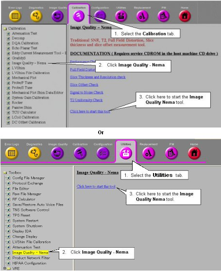
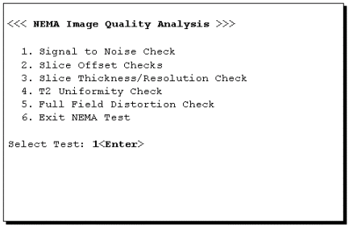
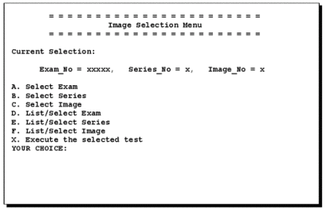
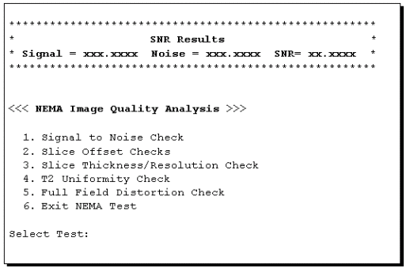

Operating Documentation
Direction 5440001-3, Rev# 6
Signa HDxt Service Methods
Module Version 1.0, Version Date 5/3/07
Operating Documentation |
| Required Persons | Preliminary Reqs | Procedure | Finalization |
|---|---|---|---|
| 1 |
The SNR tool retrieves two operator-selected images. Signal value is computed as the mean pixel value in an ROI covering 80% of the image. The image is analyzed to determine the center of the image for positioning the ROI. Subtracting the second image from the first creates a difference image and the same ROI is used to calculate noise from the subtracted image. The signal value, noise value, and signal-to-noise ratio are reported. There is an option to save the difference image with the results annotated.
On the Service Desktop Manager, click the Service Browser button. Follow the instructions on Illustration 1, below.
Illustration 1: OPENING THE IMAGE QUALITY NEMA TOOL FROM THE COMMON SERVICE DESKTOP

For TwinSpeed, highlight the same GradMode as was used in section 2, 3 or 4 above, then click on [OK].
A NEMA Image Quality window will appear on the desktop. Type 1 and press <Enter> for the Signal to Noise Check. See Illustration 2.
Illustration 2: NEMA IMAGE QUALITY MENU

Refer to Illustration 5-3 for the next steps.
Illustration 3: NEMA IMAGE SELECTION MENU

At the prompt, type A (Select Exam) and then enter the exam number.
At the prompt, type B (Select Series) and enter the series number.
Type C (Select Image) and enter the image number.
Type X (Execute the selected test) to run the procedure.
You’ll be prompted “Choose Second Image.” Continue by doing the following:
Type A and then enter the exam number.
Type B and enter the series number.
Type C and enter the image number.
Type X to run the procedure.
The analysis then begins. The final values are displayed on the screen, as shown in Illustration 4.
Illustration 4: SNR RESULTS SCREEN

Record Signal, Noise, and Signal-to-Noise in the Data Sheet at the end of this document. For TwinSpeed, identify the GradMode used.
Repeat steps Step 5 through 12 above, selecting the next exam for the analysis of each remaining image pair.
Keep the completed data sheets with the system data sheets for future reference.
Type 6 and press <Enter> to exit the NEMA Image Quality Analysis Menu.
No finalization steps.